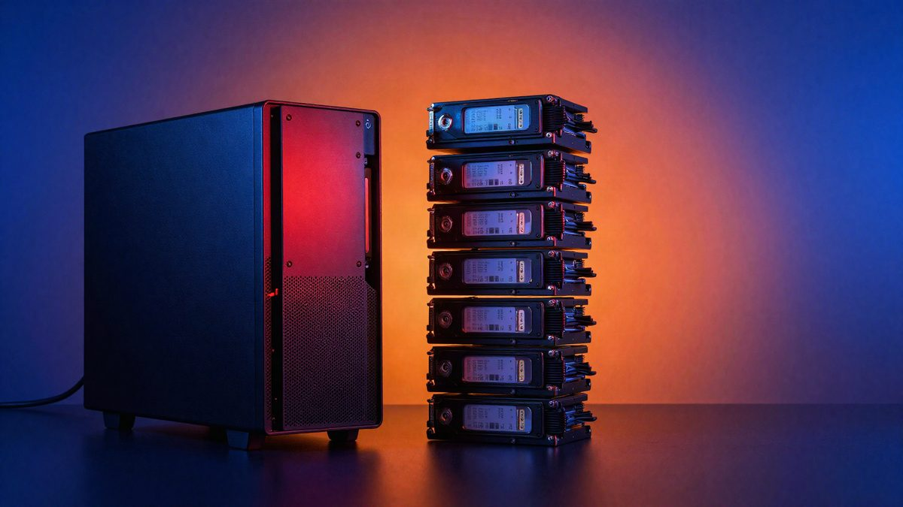

Nier: Automata nakon updatea zauzima 366 GB umjesto 50 GB, Square Enix traži uzrok

Update za Nier: Automata na Steamu, koji je igri trebao dodati podršku za kineski i korejski jezik, povećao je prikazanu instalaciju s oko 50 na 366,5 GB. Square Enix je potvrdio problem, istražuje uzrok i preporučuje da se pri preuzimanju isključe svih osam DLC-ova.
Najnoviji update za Nier: Automata na Steamu neočekivano je povećao instalaciju s oko 50 GB na 366,5 GB. Square Enix je update objavio u petak, a trebao je igri dodati podršku za pojednostavljeni i tradicionalni kineski te korejski jezik. O problemu je prvi izvijestio Automaton Media.
Square Enix je na Steamu potvrdio da instalacija traži znatno više prostora nego što je predviđeno. Uzrok istražuju i rade na rješenju, a ispričali su se zbog neugodnosti.
Moguć uzrok su DLC-ovi
Square Enix nije objasnio kako je do greške došlo, no problem bi mogao biti povezan s DLC-ovima. Na Steamu se pri odabiru preuzimanja svaki DLC prikazuje s veličinom jednakom osnovnoj igri. Navodno to vrijedi samo za početno preuzimanje i instalaciju, a kad se igra instalira, zauzeće se vraća na uobičajenih oko 50 GB.
Privremeno rješenje
Square Enix preporučuje da svatko tko treba preuzeti igru isključi svih osam DLC-ova. U Steamu to ide preko Properties, pa DLC, uklanjanjem oznake sa svake stavke. Tako se osnovna igra preuzima s predviđenom količinom prostora.
Igre sve veće
366 GB je očita greška, ali instalacije doista rastu. Veliki naslovi danas često prelaze 100 GB, a Call of Duty: Modern Warfare i Call of Duty: Black Ops Cold War premašili su 200 GB.
PC Gamer piše da će Final Fantasy 7 Revelation navodno imati instalaciju od oko 200 GB, a razvojni tim igre Phantom Blade Zero kaže da za pre-load treba 300 GB slobodnog prostora. Jedna od najvećih dosad prijavljenih instalacija bila je ona simulatora borbenih letova DCS World, s maksimalnih 250 GB 2021. godine.
U slučaju igre Nier: Automata riječ je o grešci, a ne o stvarnoj veličini igre. Kad će ispravak biti objavljen, Square Enix još nije rekao.
Izvor: PC Gamer